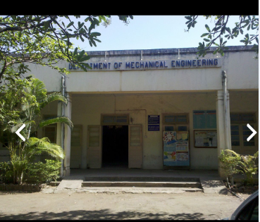

Department of Mechanical Engineering was founded in 1955. During the formative period and initial development of the Department, Late Prof. G.C.Kanitkar contributed a lot by the way of adding buildings, equipment’s, laboratories to create all the infrastructure facilities needed for development of full-fledged Department. Notable amongst are an IBR boiler, a 5 ton Cupola and the workshops.
During the period 1970-1990, Prof. Dr. P.A.Kulkarni gave the impetus for further development to widen the boundaries of the Department to make it full-fledged with emphasis on industry-institute interaction activities need for U.G. and P.G. programmes.
The department has so far produced more than 2000 mechanical graduates. Many of them have assumed esteemed positron and illustrious records of achievements. Mechanical department has one of the best infrastructure and state of the art, well-equipped 27 laboratories along with highly experienced and well qualified faculty.
Degree wing of mechanical department has 35 faculty members (Regular Faculty-18, Contractual/Adhoc/Visiting Faculty-17), out of which 12 have been honored with Ph.D. Two of the faculty members has availed QIP scheme and is undergoing Ph.D. studies at I.I.T. Many of the faculty members have published technical papers in national / international journals, and have memberships of international professional societies such as SAE, ASME, ASHRAE, ISTE, etc. Our Institute encourages faculty members to always expand their knowledge base by attending various summer/ winter schools, refresher courses, workshops, seminars and national / international level conferences.
Mechanical department of our Institute remains 1st choice for 12th standard students willing to peruse Engineering studies. Mechanical department has proven its excellent track record as nearly 85% of graduates are receiving employment through campus selections consistently.